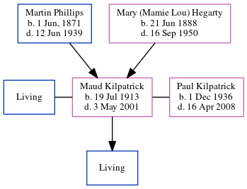

Maud Kilpatrick (née Kilpatrick) 1913 - 2001
[ Home ] | [ Calendar ] | [ Surnames Index ] | [ Census Index ] | [ Family History ]The 4th of 6 children of Martin Phillips and Mary (Mamie Lou) Hegarty, Maud Kilpatrick, the great-aunt of Michele Copp (née Phillips), was born in Georgia on Jul 19, 19131,2,3 and. She was married twice - to Kilpatrick Paul Kilpatrick. She has 1 surviving child with Kilpatrick, Paul G Jr.
During her life, she was living in Atlanta Ward 3, Fulton, Georgia, USA in 19204; in Atlanta, Fulton, Georgia in 19301; in Atlanta, Georgia, USA in 19335; in Grove Park, Fulton, Georgia in 19352; in Grove Park, Georgia in 19402; and in Atlanta in 19436 (the same place as her parents had been living in 1938) and in 19507.
She died on May 3, 20013 and was buried in Dahlonega, Lumpkin County, Georgia after May 3, 20013.
Parents
- Martin Eugene was born on Jun 1, 1871
- Mary (Mamie Lou) was born on Jun 21, 1888
Citations
- 1930 United States Federal Census Online publication - Provo, UT, USA: MyFamily.com, Inc., 2002.Original data - United States of America, Bureau of the Census. Fifteenth Census of the United States, 1930. Washington, D.C.: National Archives and Records Administration, 1930. T626, 2,667 rol
- 1940 United States Federal Census Ancestry.com Operations, Inc. (Marital Status: Married; Relation to Head: Wife)
- U.S., Find A Grave Index, 1600s-Current Ancestry.com Operations, Inc.
- 1920 United States Federal Census Online publication - Provo, UT, USA: MyFamily.com, Inc., 2005. For details on the contents of the film numbers, visit the following NARA web page: NARA. Note: Enumeration Districts 819-839 on roll 323 (Chicago City.Original data - United States of America
- U.S., City Directories, 1822-1995 Ancestry.com Operations, Inc. (Original sources vary according to directory. The title of the specific directory being viewed is listed at the top of the image viewer page. Check the directory title page image for full title and publication information.)
- U.S. City Directories, 1822-1995 Ancestry.com Operations, Inc.
- U.S. City Directories, 1822-1995 Ancestry.com Operations, Inc.
Family Tree
Generated by ged2site. Last updated on Jun 6, 2024